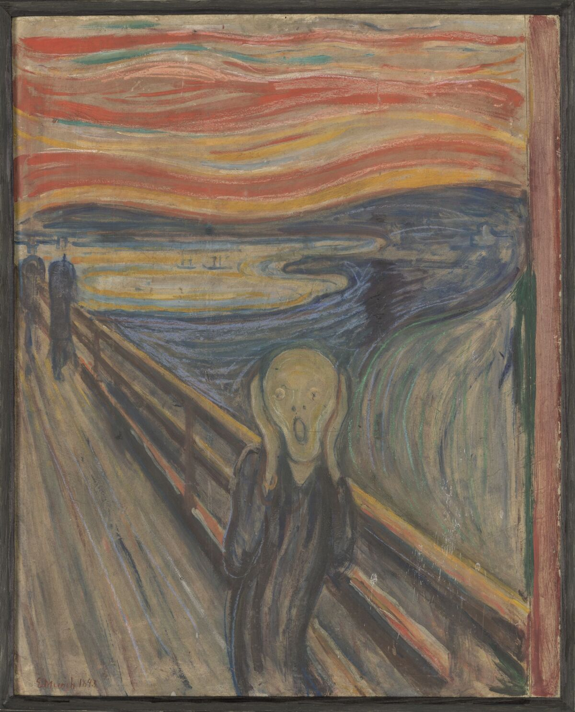
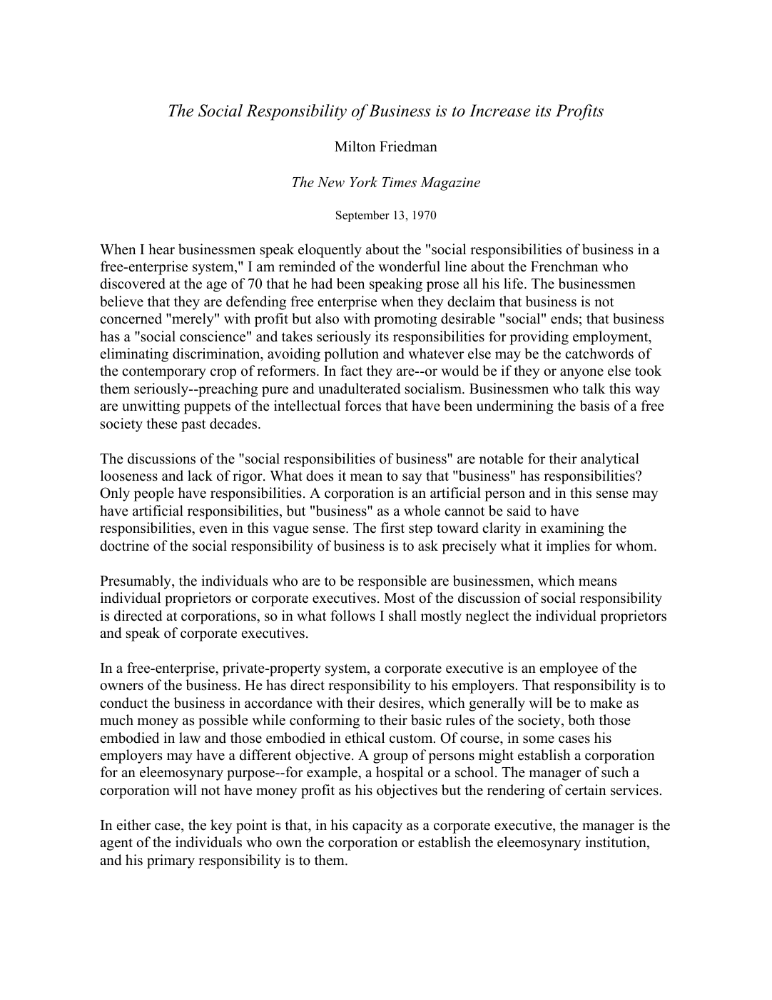
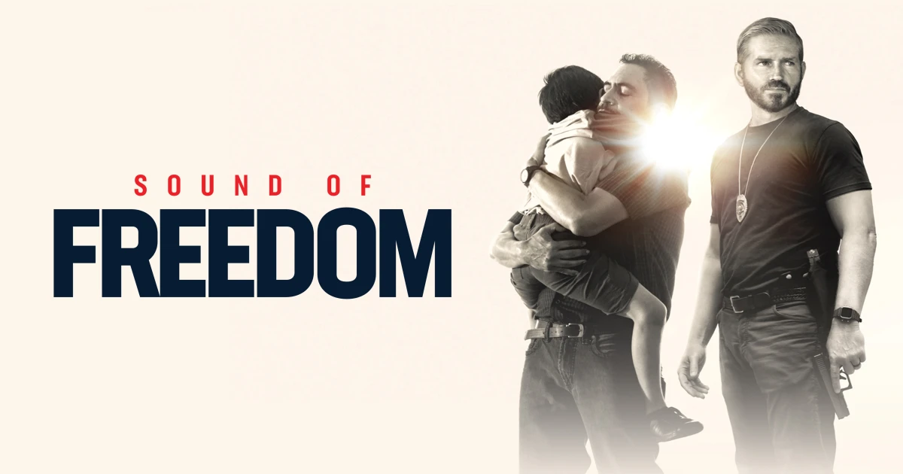
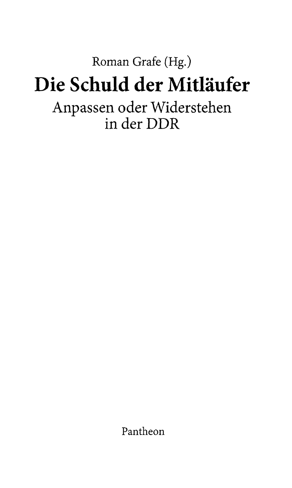
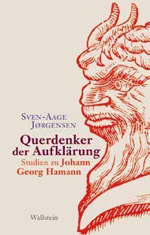
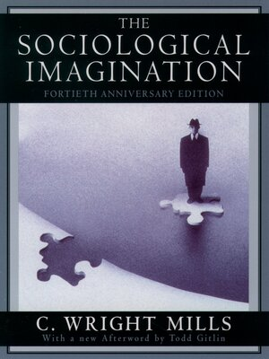
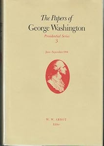
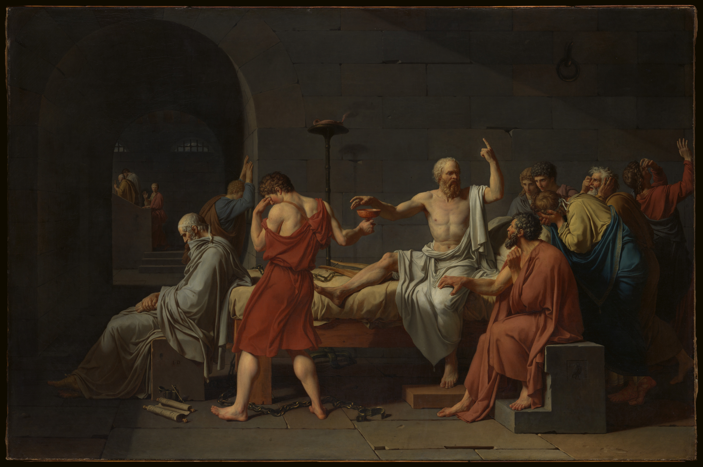

1:20:27 · 22 OPERE
La stanchezza di fronte al nulla.
Il filo del discorso
Il contributo legge il nichilismo come perdita del rapporto con realtà, significato e responsabilità morale. Un brano narrativo e la poesia Il segreto di Charles Bukowski aprono il percorso: il relatore vi riconosce rinuncia al mondo e sfiducia nella bellezza, ma propone anche una risposta, illustrata dalla storia di un bambino che considera sua madre la donna più bella. Questa interpretazione del pessimismo letterario non è una diagnosi dell’autore o di chi legge. La scelta dei maestri diventa allora una responsabilità personale: alla critica di Milton Friedman il relatore contrappone Albert Schweitzer e la reverenza per la vita. La tutela dei più deboli conduce alla discussione di Sound of Freedom. Il relatore sostiene il film contro la tratta e contesta con forza la sua ricezione giornalistica, commentando titoli e brani di recensioni. Questa parte è particolarmente polemica e contiene accuse personali: la scheda distingue il giudizio cinematografico, le associazioni fra promozione e movimenti politici e le prove di un concreto abuso. Una recensione negativa non equivale al sostegno allo sfruttamento dei minori; anche una frase sulla stigmatizzazione, citata senza una ricostruzione completa, non dimostra una condotta criminale. Il film rimane un’opera drammatica, e il successo commerciale non ne certifica ogni rappresentazione come documento storico. Tornando alla filosofia, il relatore richiama Gottfried Benn e Kritik des Nihilismus di Ernst Mayer per collegare l’annullamento del senso alla condizione individuale e collettiva. Segue una lunga riflessione su immagini, didascalie e linguaggio: una fotografia delle proteste tedesche del 2020, l’uso delle bandiere storiche e il mutamento del termine Querdenker sono usati per denunciare ciò che il relatore considera falsificazione. Occorre però distinguere l’origine di un simbolo dai suoi impieghi successivi, una singola inquadratura dall’intera manifestazione e le diverse accezioni di una parola da una contraddizione logica. Le generalizzazioni sui media e sulle intenzioni dei loro autori restano attribuite a chi parla. Il tema del conformismo viene affrontato attraverso Die Schuld der Mitläufer, raccolta di testimonianze sulla DDR, con riferimenti a Goldhagen, Jaspers e Bartleby. Il relatore contesta un esame della responsabilità limitato a un solo sistema politico e rivendica il valore del rifiuto individuale. Alle critiche rivolte alle istituzioni e ai comitati etici accompagna citazioni di Orwell, Mills, Kant e Washington. Il rapporto fra situazioni sociali e convinzioni personali, richiamato da Lévi-Strauss e da L’immaginazione sociologica, non viene ridotto a un’autorizzazione all’opportunismo: qui il dissenso del relatore richiede di conservare la differenza fra spiegare le condizioni di una credenza e giustificare moralmente qualsiasi scelta. Il finale riprende l’educazione e la qualità della classe dirigente. Il richiamo a Idiocracy, alle invenzioni tecniche e alla morte di Socrate serve a interrogare il contesto sociale che favorisce o impoverisce il pensiero. La conclusione invita a tornare ai libri e ai maestri per cercare di migliorare se stessi. È una proposta culturale ed etica del relatore, distinta dalle sue accuse non dimostrate e dalle metafore cliniche impiegate durante la polemica.
I libri nel discorso
![Copertina della raccolta contenente il frammento 5[71] di Frammento postumo 5[71], Der europäische Nihilismus (Il nichilismo europeo, 10 giugno 1887)](../assets/copertine/nietzsche-frammento-7-60.jpg)
Frammento postumo 5[71], Der europäische Nihilismus (Il nichilismo europeo, 10 giugno 1887)
Identificazione probabile
Copertina della raccolta contenente il frammento 5[71]: Copertina della raccolta Frammenti postumi 1885–1887, Adelphi, Opere volume VIII tomo I, testo critico Colli/Montinari, traduzione Sossio Giametta, ISBN 9788845900303. La scheda editoriale conferma espressamente il contenimento di Il nichilismo europeo (Lenzer Heide, 10 giugno 1887).
Copertina del volume contenitore, non di un’edizione autonoma del frammento e non della selezione Brahn 1917 usata per la collazione del tedesco. Riusata l’identica immagine canonica senza creare un nuovo asset. La prima edizione Adelphi è 1975; non è identificata una precisa ristampa nel filmato, e le diverse paginazioni editoriali non vengono fuse.
Segmenti17–19, 119,98–149,98 s: attribuzione a Nietzsche, esistenza senza senso o meta, ricorrenza inevitabile, assenza di finale nel nulla ed eterno ritorno. Seg.20–23, 149,98–179,16 s: commento del relatore e ripetizione della forma estrema del nichilismo. Collazione del passo tedesco nel § 75 della selezione Brahn 1917, p. 42; mappatura separata al 5[71] dal Kommentar critico. Titolo e numerazione non pronunciati.
Passaggio 1:59 ↗ · Fonti e libro ↗
L’urlo (Skrik / The Scream)
Dipinto del 1893, Nasjonalmuseet: Versione del 1893, tempera e pastello grasso su cartone, 91 × 73,5 cm. Nasjonalmuseet, Oslo, inventario NG.M.00939. Fotografia di Børre Høstland.
Riproduzione museale autentica dell’intero dipinto del 1893 con cornice. Non è una copertina editoriale; è distinta dalle altre versioni dipinte, dai pastelli e dalla litografia di Munch. Credito fotografico: Børre Høstland, Nasjonalmuseet.
riconoscimento_vocale_locale
Passaggio 2:59 ↗ · Fonti e libro ↗
Il segreto (The Secret)
Copertina: Fotografia autentica della raccolta Betting on the Muse: Poems & Stories, Black Sparrow Press, 1996, esemplare con dorso rosso. Contiene The Secret a pagina 66 e altri testi, compreso The Terror: stessa immagine già usata nel repertorio, non copertina autonoma della poesia.
Immagine autentica dell’opera o contenitore dichiarato; nessun esemplare fisico del relatore è certificato dalla trascrizione.
riconoscimento_vocale_locale
Passaggio 3:23 ↗ · Fonti e libro ↗
The Social Responsibility of Business Is to Increase Its Profits
Identificazione probabile
Copertina: Prima pagina della trascrizione universitaria dell’articolo del 13 settembre 1970, conservata dalla University of Michigan. Pagina autentica della trascrizione disponibile, non facsimile della pagina del New York Times Magazine e non copertina di un libro.
Immagine autentica dell’opera o contenitore dichiarato; nessun esemplare fisico del relatore è certificato dalla trascrizione.
riconoscimento_vocale_locale
Passaggio 10:57 ↗ · Fonti e libro ↗
Il mito di Sisifo
Identificazione probabile
Copertina: Bompiani · Tascabili · edizione italiana di riferimento
Copertina autentica di riferimento, controllata visivamente. L’edizione non è identificata come quella usata nel video.
riconoscimento_vocale_locale
Passaggio 14:02 ↗ · Fonti e libro ↗
Sound of Freedom
Copertina: Immagine promozionale orizzontale ufficiale Angel Studios per Sound of Freedom, film del 2023. Non locandina verticale d’epoca, non copertina editoriale e non fotogramma di una visione integrale dichiarata.
Immagine autentica dell’opera o contenitore dichiarato; nessun esemplare fisico del relatore è certificato dalla trascrizione.
riconoscimento_vocale_locale
Passaggio 21:19 ↗ · Fonti e libro ↗
La ballata delle madri
Identificazione probabile
Copertina della raccolta: Garzanti · 2001
La ballata delle madri è contenuta in Poesia in forma di rosa. L’immagine mostra la raccolta Garzanti del 2001, con prefazione di Edoardo Esposito, non un volume autonomo della poesia né l’edizione del video.
riconoscimento_vocale_locale
Passaggio 34:47 ↗ · Fonti e libro ↗Kritik des Nihilismus
Miniatura bibliotecaria autentica della legatura verde dell’esemplare di Kritik des Nihilismus conservato nella Hannah Arendt Personal Library, Bard College; 102×150 pixel nativi. Titolo non leggibile nella foto: identificazione tramite il record collegato. Non sovraccoperta né frontespizio.: Ernst Mayer, Kritik des Nihilismus, München, Lehnen Verlag, 1958; esemplare Bard College, Hannah Arendt Personal Library, B828.3 .M3
Il record Bard assegna la miniatura alla propria copia dell’edizione München, Lehnen, 1958, con annotazioni. La data 2025 del deposito digitale non è la data del libro. La piccola fotografia mostra la legatura verde con segni di usura e un’etichetta bibliotecaria in basso a sinistra; non permette di leggere titolo o autore e non certifica l’esemplare del relatore.
Segmento 325, 2225.04–2231.91 s: autore trascritto foneticamente come eren smyer; segmenti 329–330, 2245.05–2258.67 s: titolo tradotto Critica del nichilismo e anno 1951; segmenti 331–337, 2258.67–2313.46 s: il relatore dichiara approssimativa la propria traduzione e ne propone una lettura sull’annientamento dell’essere nell’esistere. Identificazione bibliografica corroborata dai cataloghi, anno corretto separatamente.
Passaggio 37:25 ↗ · Fonti e libro ↗
Die Schuld der Mitläufer. Anpassen oder Widerstehen in der DDR
Copertina: Frontespizio originale della raccolta Pantheon, Die Schuld der Mitläufer, a cura di Roman Grafe, da frontespizio e indice conservati da ETH Zürich, prima pagina PDF. Non copertina esterna; raccolta con più autori.
Immagine autentica dell’opera o contenitore dichiarato; nessun esemplare fisico del relatore è certificato dalla trascrizione.
riconoscimento_vocale_locale
Passaggio 53:34 ↗ · Fonti e libro ↗
Hitler’s Willing Executioners. Ordinary Germans and the Holocaust / I volenterosi carnefici di Hitler. I tedeschi comuni e l’Olocausto
Sovraccoperta completa dell’edizione tedesca Siedler 1996, esemplare museale: Sovraccoperta completa dell’edizione tedesca Siedler 1996, esemplare museale
Fotografia museale della sovraccoperta completa, con fronte, dorso e retro; ISBN 388680593 X. Non copertina italiana mostrata dal relatore, non prima edizione inglese, non immagine di un’opera diversa. Nessun ritaglio o ricostruzione.
riconoscimento_vocale_locale
Passaggio 54:38 ↗ · Fonti e libro ↗
La questione della colpa
Identificazione probabile
Copertina: Raffaello Cortina
riconoscimento_vocale_locale
Passaggio 55:39 ↗ · Fonti e libro ↗
Bartleby lo scrivano
Copertina della raccolta: Bompiani · Bartleby lo scrivano e altri racconti · 2018
Copertina della raccolta Bompiani che contiene Bartleby lo scrivano. Non è presentata come copertina di un’edizione autonoma del racconto né come l’esemplare citato nel video.
riconoscimento_vocale_locale
Passaggio 56:33 ↗ · Fonti e libro ↗Die Juden und Europa
Identificazione probabile
Copertina del volume IV Fischer che contiene il saggio: Copertina ufficiale Fischer della raccolta Gesammelte Schriften, Band 4: Schriften 1936–1941, 1988, ISBN 9783596273782; il saggio è contenuto alle pp. 308–331.
Immagine della raccolta moderna, non copertina autonoma del saggio del 1939, facsimile del manoscritto o edizione riconosciuta nel video. Il volume intero non è stato letto.
Segmenti 490–491, 3431,90–3450,94 s: il conduttore attribuisce a Max Horkheimer una massima sul rapporto fra il parlare di fascismo e il parlare di capitalismo. Titolo e anno non pronunciati. La collazione è sulla traduzione primaria spagnola di Eduardo Maura, non sul testo tedesco.
Passaggio 57:11 ↗ · Fonti e libro ↗
Querdenker der Aufklärung. Studien zu Johann Georg Hamann
Copertina: Copertina autentica dell’edizione Wallstein 2013, ISBN 9783835312326, immagine nativa estratta dal prospetto editoriale primavera 2013, pagina 72. Non una pagina ingrandita artificialmente o una raccolta di opere di Hamann.
Immagine autentica dell’opera o contenitore dichiarato; nessun esemplare fisico del relatore è certificato dalla trascrizione.
riconoscimento_vocale_locale
Passaggio 59:06 ↗ · Fonti e libro ↗
1984
Copertina: Newton Compton · edizione illustrativa
riconoscimento_vocale_locale
Passaggio 1:00:42 ↗ · Fonti e libro ↗La pulzella d’Orléans
Identificazione probabile
Copertina: Reclam · Die Jungfrau von Orleans · testo originale tedesco
Copertina ufficiale Reclam del testo tedesco: non identifica l’edizione o la traduzione italiana della citazione. File TIFF del publisher convertito in PNG senza modificare il contenuto.
riconoscimento_vocale_locale
Passaggio 1:04:25 ↗ · Fonti e libro ↗
Fuga dalla libertà
Identificazione probabile
Copertina: Mondadori, 2022
riconoscimento_vocale_locale
Passaggio 1:06:46 ↗ · Fonti e libro ↗
L’immaginazione sociologica (The Sociological Imagination)
Copertina: Copertina dell’edizione Oxford University Press del quarantennale, 2000, ISBN 9780195133738, con nuova postfazione di Todd Gitlin. Opera originale del 1959; non prova dell’edizione usata dal relatore.
Immagine autentica dell’opera o contenitore dichiarato; nessun esemplare fisico del relatore è certificato dalla trascrizione.
riconoscimento_vocale_locale
Passaggio 1:06:55 ↗ · Fonti e libro ↗
Risposta alla domanda: che cos’è l’Illuminismo?
Identificazione probabile
Copertina della raccolta che comprende il saggio sull’Illuminismo: Firenze University Press · Sette scritti politici liberi · 2011 · a cura di Maria Chiara Pievatolo
Copertina del volume cartaceo FUP che comprende il saggio, riscontrato dal catalogo universitario. L’ISBN appartiene alla raccolta; il filmato non annuncia un’edizione e il titolo del saggio è un’identificazione probabile della citazione.
riconoscimento_vocale_locale
Passaggio 1:08:31 ↗ · Fonti e libro ↗
Risposta alla Chiesa episcopale protestante, 19 agosto 1789
Identificazione probabile
Copertina della raccolta Presidential Series, volume 3, 1989: Fotografia della copertina della raccolta The Papers of George Washington, Presidential Series, volume 3, June–September 1789, University Press of Virginia, 1989, ISBN 9780813912103; sulla copertina W. W. Abbot, Editor. La risposta alla Chiesa episcopale protestante è contenuta alle pp. 496–499 secondo l’edizione citata espressamente da Founders Online. Immagine del contenitore, non manoscritto o pagina della risposta del 1789 e non lettera alla sinagoga di Newport del 1790.
Foto del venditore Blue Whale Books, scheda 32513166964, definita vendor-image nel markup pubblico; volume e intervallo cronologico leggibili sulla copertina. Il volume editoriale è illustrativo: nessuna copia precisa della fonte del relatore identificata. Founders cita Dorothy Twohig per il volume; il progetto e la copertina riportano W. W. Abbot come editor.
A 4405.09 s il relatore nomina George Washington; a 4415.09–4430.71 s associa felicità e dovere morale, quindi annuncia una lettera. A 4430.71–4455.47 s dice 1789 e rende il passo sul promuovere la prima inculcando la pratica del secondo. Data completa e destinatario non sono pronunciati; la formula permette il riscontro nella risposta episcopale.
Passaggio 1:13:40 ↗ · Fonti e libro ↗
Idiocracy
Immagine promozionale del film · distribuzione digitale: Film statunitense del 2006, regia di Mike Judge, con Luke Wilson e Maya Rudolph, distribuito da 20th Century Fox. Immagine promozionale autentica della distribuzione digitale; non una copertina libraria. La scheda statunitense distingue il 2006 di uscita dal copyright grafico del 2005.
Grafica ufficiale con il titolo Idiocracy e il cast, vista integralmente nella scheda Apple TV. Non è una prova delle tesi sociologiche del relatore.
riconoscimento_vocale_locale
Passaggio 1:16:17 ↗ · Fonti e libro ↗
La morte di Socrate (The Death of Socrates)
Identificazione probabile
Riproduzione del dipinto, The Metropolitan Museum of Art, inv. 31.45: La morte di Socrate (The Death of Socrates), Jacques-Louis David, 1787. Olio su tela, 129,5 × 196,2 cm; The Metropolitan Museum of Art, New York, Catharine Lorillard Wolfe Collection, Wolfe Fund, 1931, inventario 31.45. Riproduzione integrale Open Access del museo, non copertina di un libro.
Il titolo italiano, l’anno e il nome David sono riconoscibili nella trascrizione automatica del congedo; il museo conferma gli estremi del dipinto. Non è stato confrontato un fotogramma del filmato con la riproduzione. Nessuna edizione libraria o stampa fisica è identificata.
Segmento 689, 4726,98–4737,98 s: concludere con l’immagine e la rappresentazione come se la immaginava Jacly David (forma ASR). Segmento 690, 4737,98–4748 s: 1787 e morte di Socrates. Titolo, autore e data bibliografici collazionati col record museale The Death of Socrates, Jacques Louis David, 1787, inventario 31.45.
Passaggio 1:18:57 ↗ · Fonti e libro ↗Minutaggi ricavati da testi automatici, da riascoltare. Le identificazioni probabili sono segnalate accanto ai libri.